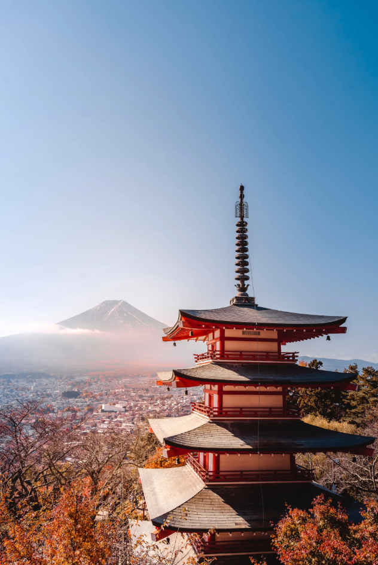

Arquitectura tradicional japonesa (templos, castillos)
Armonía entre la naturaleza, la espiritualidad y la estética
La arquitectura tradicional japonesa es un testimonio de la relación armónica entre los seres humanos y la naturaleza. Desde los templos budistas y sintoístas hasta los castillos samuráis, la arquitectura japonesa ha buscado integrar las construcciones con el entorno natural, utilizando materiales como madera y papel para crear espacios que invitan a la reflexión y la serenidad. Los templos y santuarios, con sus techos curvados y jardines cuidadosos, son representaciones de la búsqueda de la paz y la armonía interior.
Los castillos japoneses, aunque concebidos principalmente con fines defensivos, también reflejan una estética particular, con jardines, paredes de piedra y pabellones que simbolizan el poder y la sofisticación de la nobleza samurái. A través de estas construcciones, se puede ver cómo la arquitectura japonesa no solo satisface necesidades funcionales, sino que también busca crear un espacio donde la belleza, la espiritualidad y la funcionalidad se fusionen.

Gastronomía japonesa (sushi, ramen, kaiseki)
La gastronomía japonesa es mucho más que una experiencia sensorial: es una expresión cultural que honra la naturaleza, la estacionalidad y el equilibrio, combinando tradición, estética y filosofía en cada plato.
La gastronomía japonesa es un arte culinario profundamente enraizado en los principios de la naturaleza, la estacionalidad y el equilibrio. Elementos como el sushi, el ramen y el kaiseki son representaciones de cómo la cocina japonesa valora la simplicidad y la calidad de los ingredientes, buscando siempre preservar sus sabores originales y naturales. El sushi, por ejemplo, refleja una estética de equilibrio entre el arroz, el pescado y el vinagre, con una preparación meticulosa que se asocia con la paciencia y la precisión.
El ramen, a su vez, refleja la influencia de otras culturas, como la china, pero se ha adaptado de forma única en Japón, con variaciones regionales que expresan la diversidad culinaria del país. El kaiseki, la alta cocina japonesa, es una experiencia gastronómica que va más allá de la comida, buscando armonizar colores, texturas y sabores, mientras honra la estacionalidad de los ingredientes. La gastronomía japonesa no es solo una forma de alimentar el cuerpo, sino un acto consciente de conexión con la naturaleza y el momento presente, de la misma forma en que otras tradiciones artísticas japonesas, como el ikebana y la ceremonia del té, buscan expresar lo sublime en lo cotidiano.

Manga y anime
Conocido como “el camino del guerrero”
El manga y el anime son dos de los productos culturales más representativos de Japón, que, a lo largo de las últimas décadas, han alcanzado una popularidad global. Más allá de ser formas de entretenimiento, ambos reflejan una profunda comprensión de los valores, la sociedad y las emociones humanas a través de historias visuales y dinámicas. El manga, como medio gráfico, y el anime, como su adaptación animada, combinan la narración de historias con una estética única que destaca la expresión emocional, el movimiento y la acción.
El manga tiene sus raíces en la tradición japonesa de contar historias visualmente, pero fue durante el siglo XX cuando alcanzó su forma moderna, convirtiéndose en una de las formas de expresión más accesibles en Japón. A través de una variedad de géneros que abarcan desde lo fantástico hasta lo realista, el manga permite a los creadores explorar temas complejos como la lucha interna, los dilemas morales, la justicia, el amor y la pérdida. Los personajes del manga suelen tener una gran profundidad emocional, lo que permite que la audiencia se conecte con ellos a nivel personal.
El anime, por su parte, amplió la popularidad del manga al llevar estas historias a la pantalla, logrando un mayor alcance internacional. El anime no solo presenta entretenimiento, sino que también transmite mensajes filosóficos, políticos y sociales. Muchas series de anime exploran temas como la identidad, el sacrificio, la lucha por la justicia y la superación personal, todos muy relacionados con los valores tradicionales de la cultura japonesa, como el honor y la perseverancia.
Además de su éxito comercial, el manga y el anime han creado una subcultura global, la cultura “otaku”, que celebra esta forma de arte y ha influido en la moda, la música y el comportamiento social en muchos países. El fenómeno otaku ha permitido a las personas encontrar una comunidad global unida por el amor a estas formas de expresión cultural.
El manga y el anime, al haber alcanzado una popularidad global, no solo representan una forma de entretenimiento, sino también un medio para explorar los valores, conflictos sociales y filosofías de la cultura japonesa en un formato accesible para diversas audiencias.